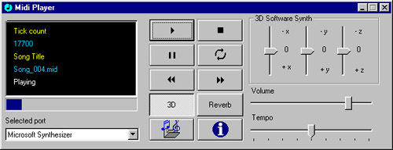
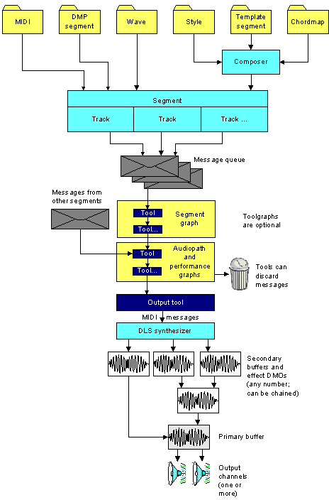

Title: Playing Midi files with DirectMusic Author: Carlos Jiménez de Parga Email: cjimenez@servitel.es Environment: VC++ 6.0, NT 4.0,2000 Server, Win95/98 Keywords: DirectX Audio Class Level: Description: A DirectX 8 class to perform Midi music playback. Section Audio & Video SubSection DirectMusic

This article focuses on the use of CMidiMusic which
allows an easy access to DirectX DirectMusic API.
This class allows loading and playing general midi sequence files(.mid),
segment files (.sgt) and PCM waveform files
(.wav). The class is designed to perform midi playback in one segment and
offers additional features like using any midi port installed in your
system, 3D sound environment, sound effects, etc...
The DirectX 8.0 Audio part offers improved integration between
DirectSound and DirectMusic,
including a great set of new features. Some of these are listed hereafter:
IDirectMusic8: This interface allows managing buffers and ports. There should only
exist one instance of this
interface per aplication.
IDirectMusicPerformance8: This is the most important interface in
playback management. It is used to add
and remove ports, play segments, notify event reception, control music
parameters and obtain timing
information.
IDirectMusicPort8: This interface provides access to DirectMusicPorts
objects like MPU-401 or the software
sinthesizer.
IDirectMusicSegment8: This interface represents a segment, musical
piece made up of multiple tracks.
It can contain a midi file,a wave,a segment.
IDirectMusicLoader8: Its main function is to find and load the
diferent objects.
These objects are to be stored in a segment.
IDirectMusicSegmentState8: The (playback) engine creates a
SegmentState object which allows
analyzing the state of the segment currently playing.
IDirectMusicAudioPath8: The IDirectMusicAudioPath8 interface represents the stages of data flow from the data file to the primary buffer.
Once a resource has been loaded in a segment, the performance dispatches the
messages defined
by a tool of an aplication, such tools are grouped in toolgraphs which process
specific segment
messages. A tool can modify a message and pass it on, delete
it, or send a new message.
Finally, the messages are delivered to the output tool, which converts the data to MIDI format before passing it to the synthesizer. Channel-specific MIDI messages are directed to the appropriate channel group on the synthesizer. The synthesizer creates sound waves and streams them to a device called a sink, which manages the distribution of data through buses to DirectSound buffers.
There are three kinds of buffers:
The following diagram shows the flow of data from files to the speakers:

In first sight is necesary to add in Visual C++ IDE this library:Go to Project -> Settings
-> Object Library Modules and add dxguid.lib of DirectX8 SDK.
After this it will be necesary to include in the project the header "dmusic.h"
and "dmusic.cpp" file
and finally declare a dinamic variable of CMidiMusic class as shown below:
void CPlayerDlg::OnButton_Start()
{
DWORD dwcount; // Counter variable to enumerate the midi ports
INFOPORT Info; // INFOPORT structure to store port information
BOOL bSelected;
CMidiMusic *pMidi; // Pointer to CMidiMusic class
pMidi=new CMidiMusic; // Allocate it
pMidi->Initialize(FALSE);// Initialize without 3D positioning
dwcount=0;
bSelected=FALSE;
// Port enumeration phase
// It is necessary to supply a port counter
while (pMidi->PortEnumeration(dwcount,&Info)==S_OK)
{
// Ensure it is an output hardware device
if (Info.dwClass==DMUS_PC_OUTPUTCLASS)
{
if (!((Info.dwFlags & DMUS_PC_SOFTWARESYNTH) || bSelected))
{
// Select the enumerated port
pMidi->SelectPort(&Info);
bSelected=TRUE;
}
}
dwcount++; // It is necessary
}
// Read the file and specify if it is a mid file or not
pMidi->LoadMidiFromFile("c:/music/song_004.mid",TRUE);
// Play the file
pMidi->Play();
AfxMessageBox("Playing...");
// Stop it
pMidi->Stop();
//Important!: Delete the dinamic variable in order to call the destructor
//which call the DirectMusic releases interfaces
delete pMidi;
}
|
Synthetizer |
3D |
Effects (Reverb,Chorus) |
Segments(.sgt), Waves(.wav) |
|
MicroSoft Software |
Yes |
Only in not 3D mode |
Only in 3D mode |
|
Hardware |
No |
No |
No |
|
External |
No |
No |
No |
For more information about the CMidiMusic class read the attached file readme.txt
included in the sources.
You will be able to find more information in the online help of http://www.microsoft.com/directx
and DirectX 8
SDK technical documentation.
As you can see, this is not WinAmp, wish it was ;) Nevertheless, all of CMidiMusic class features are made available.